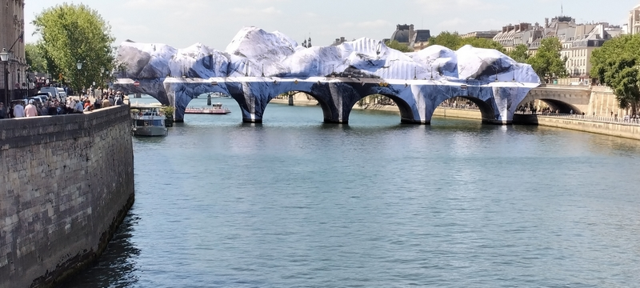

Quoi de neuf à Paris? (2022-2023)
Quoi de neuf à Paris? (2018-2021)
Quoi de neuf à Paris? (2016-2017)
Archived page of "Quoi de neuf à Paris? (2011-2015)"
Carnage in Paris on 13 November 2015
Dernière mise à jour: 22/05/2026.
Quoi de neuf à Paris? (2024-2026)

"La Caverne du Pont Neuf", une œuvre d'art monumentale éphémère de JR, sera accessible gratuitement 24/7 à partir du 6 juin et jusqu'au 28 juin 2026.


Un spectacle de majorettes par les Majors Girls sur la place de l'Hôtel de Ville, Paris pour la Nuit Blanche 2026 le 6 juin 2026. (Source: https://www.leparisien.fr)


La Journée de l'Europe à la Place de la République


Comme partout en Europe, la Journée de l'Europe a été célébré à Paris à la Place de la République le 9 mai 2026. Le soir il y avait des concerts par Valeria Stoica (Moldavie, Roumanie), Postman (Ukraine) et Solan (France).
Central Chapelle, un nouveau spot music & food


Central Chapelle, un nouveau spot music & food, a été ouvert depuis le 7 mai 2026. Il se trouve au troisième étage, à côté d'Adidas Arena, tout près du métro Porte de la Chapelle. La deuxième photo montre la terrace. Fermé le lundi et le mardi. Les horaires sur le site officiel ici.

Les participants se sont réunis à l5h00 à la Halle Pajol, Esplanade Nathalie Sarraute mais le cortège a commencé seulement vers 16h30 pour les jardins d'Eole. Bal à partir de 19h sur la Halle Pajol.

Jardin des Traverses (La Petite Ceinture du 18e)
")
")
Le Jardin des Traverses (La Petite Ceinture du 18e) offre une petite promenade en dessous de la rue des Poissonniers pour les habitants du 18e arrondissement de Paris. L'acces est face à la station de tram "Diane Airbus". Tous les détails (horaires du jardin, du bar & restaurant) ici.
Le CiNey: un nouveau cinéma inauguré le 29 avril 2026

Le CiNey, un cinéma de deux salles, a été inauguré le 29 avril 2026 au 126 Boulevard Ney, à deux pas de la Porte de Clignancourt dans le 18ᵉ arrondissement de Paris. Ce cinéma n'accepte pas les cartes illimitées de l'UGC ou de Gaumont. Tous les détails ici .
L'un qui ferme et l'autre qui rouvre
 La Tour Montparnasse: Fermeture le 31 mars 2026
La Tour Montparnasse: Fermeture le 31 mars 2026
L’Observatoire très touristique de la tour Montparnasse, culminant à 210 mètres de hauteur, est fermé depuis mardi 31 mars 2026 pour une durée de cinq ans en raison de travaux de rénovation. Tous les détails ici. (Photo: https://www.tourmontparnasse56.com)
 Les Catacombes de Paris: Réouverture le 8 avril 2026
Les Catacombes de Paris: Réouverture le 8 avril 2026
Réouverture des Catacombes de Paris, le plus grand ossuaire souterrain au monde, le 8 avril 2026. Fermé au public depuis novembre 2025, le site fait l'objet d'une rénovation majeure. Tous les détails ici. (Photo: https://www.catacombes.paris.fr/)
Inauguration de la Ferme de la Villette le 28 mars 2026
La Ferme de la Villette a été inaugurée le 28 mars 2026. Elle se trouve à gauche de la Grande Halle si vous sortez du métro Porte de Pantin. Tous les détails ici.
 La Ferme de la Villette a été inaugurée le 28 mars 2026.
La Ferme de la Villette a été inaugurée le 28 mars 2026.
 Un mouton avec son bébé à la Ferme de la Villette.
Un mouton avec son bébé à la Ferme de la Villette.

Une chèvre des fossés à la Ferme de la Villette.
 Deux ânes au repos à la Ferme de la Villette.
Deux ânes au repos à la Ferme de la Villette.


L'Université Paris 1 Panthéon-Sorbonne a un nouveau campus à la Porte de la Chapelle. Le Campus Condorcet accueille ses premiers étudiants (3 500, selon Le Parisien) en Sciences Humaines et Sociales depuis la fin de janvier 2026. Le tram T3b et la ligne 12 du métro vont être bondés! (Photo: Le Parisien)
Le 1er février 2026 sur la plus belle avenue du monde
 Le matin: 10 km des Champs-Élysées
Le matin: 10 km des Champs-Élysées
Près de 20 000 personnes ont participé à la quatrième édition du 10km des Champs-Elysées. (Photo: https://actu.fr/)
 L'après-midi: Happy Spring Festival
L'après-midi: Happy Spring Festival
Un accueil chaleureux sous un temps gris pour cette 4e édition du "Happy Spring Festival" entre George V et l'Arc de Triomphe. (Photo: https://www.paris.fr/)
La Clef, un cinéma pas comme les autres, est de retour!

Après une fermeture de 8 ans (il a été contraint de fermer ses portes en 2018 après la mise en vente de l'immeuble qui l'héberge), le cinéma La Clef est réouvert le 14 janvier 2026. La Clef est un cinéma pas comme les autres: on est libre de payer ce qu'on veut (paliers de 0,50 €) pour assister à une séance mais d'abord il faut payer 5 € pour une adhésion annuelle (à l'année scolaire). Cela se fait sur place. Infos requises: nom, prénom, mail. C'est pas ouvert tous les jours, seulement du mercredi au dimanche. Les cartes illimitées de UGC et de Gaumont ne sont pas acceptées. Tous les détails ici.
La fin de l'année 2025 = la fin du Food Society aux Ateliers Gaîté

La fin de l'année 2025 voit aussi la fermeture du Food Society aux Ateliers Gaîté à Montparnasse après 3 ans d'existence. Ce food court, l’un des plus grands à Paris avec ses 15 restaurants, fermera définitivement ses portes le 1er janvier 2026.
On vous n'a pas oublié.... hommage aux victimes du 13 novembre 2015


Crédit photo: Julien Falsimagne
Photos des 6 endroits touchés à Paris le soir du 13 novembre 2015


Nouvelle piscine municipale au 133 rue Belliard, Paris.

La piscine Solita Salgado, située au 133 rue Belliard est la petite dernière des 43 piscines municipales parisienne. Elle a été ouverte au public le 8 septembre 2025. Tous les détails ici.
"Femmes en or" à la Porte de la Chapelle

Parmi les 10 statues des "femmes en or" qui ont été inaugurées le 26 juillet 2025 à la Porte de la Chapelle figurent celles de Simone Veil (à droite de la photo) et Alice Guy. Toutes les 10 "femmes en or" avec leurs biographies ici.
Marché Brésilien à Place Monge le 6 septembre 2025


Un "Marché Brésilien" (11e édition) a eu lieu à Place Monge le 6 septembre 2025. Photo montre un des nombreux stands.
La Bpi Centre Pompidou est réouverte depuis le lundi 25 août 2025 dans un nouveau endroit à Bercy

Bonne nouvelle pour ceux qui cherchent une bibliothèque ouverte en soirée ou le lundi quand les autres bibliothèques sont fermées : La Bpi Centre Pompidou a réouvert ses portes et est toujours accessible tous les jours, y compris les dimanches, jusqu’à 22 h (fermeture uniquement le mardi). En effet la bibliothèque a réouvert ses portes à Bercy le lundi 25 août 2025. Elle devrait occuper ce site de manière temporaire pendant cinq ans, le temps que les travaux de rénovation du Centre Pompidou à Beaubourg se terminent, prévus pour 2030.
En sortant du métro Cour Saint-Émilion (ligne 14), prenez la Sortie 1 et traversez le Village Bercy. La bibliothèque se situe tout au bout du passage.
Plutôt que de prendre l’escalator, il est préférable de traverser la rue (avenue des Terroirs de France) pour prendre un ticket au RdC avec un QR code nécessaire pour accéder à la bibliothèque (située au 2ᵉ étage). Si on a l’application Bpi Lumière installée, on peut faire généré ce code directement (mais il faut quand même passer au RdC pour l'activer avant de monter au 2e étage).
Tous les détails ici.
Photo: pgoh
La nouvelle médiathèque Virginia-Woolf dans le 13ème
 La nouvelle médiathèque Virginia-Woolf a été inaugurée le 5 juillet 2025. C'est à deux pas du métro Porte d'Italie. Tous les détails ici.
La nouvelle médiathèque Virginia-Woolf a été inaugurée le 5 juillet 2025. C'est à deux pas du métro Porte d'Italie. Tous les détails ici.
L'été 2025 à Paris : La baignade dans la Seine pour tous !
 Trois nouveaux sites de baignade naturelle (au bras Marie, à Grenelle et à Bercy) sont disponibles dès le 5 juillet et jusqu'au 31 août 2025 à Paris (les deux derniers ont été prolongés pour une deux semaines de plus). La photo montre le site au bras Marie, situé entre les stations de métro Pont Marie et Sully–Morland, sur la ligne 7. Tous les détails ici.
Trois nouveaux sites de baignade naturelle (au bras Marie, à Grenelle et à Bercy) sont disponibles dès le 5 juillet et jusqu'au 31 août 2025 à Paris (les deux derniers ont été prolongés pour une deux semaines de plus). La photo montre le site au bras Marie, situé entre les stations de métro Pont Marie et Sully–Morland, sur la ligne 7. Tous les détails ici.
Photo: Jean-Baptiste Gurliat
Le Festival We Love Green 2025 au Bois de Vincennes du 6 au 8 juin 2025
 Le Festival We Love Green aura lieu au Bois de Vincennes du 6 au 8 juin 2025. Tous les détails ici
Le Festival We Love Green aura lieu au Bois de Vincennes du 6 au 8 juin 2025. Tous les détails ici
Cinéma en plein air pour la Nuit Blanche le 7 juin 2025.....
 .....gratuitement, du quai de Valmy (10e) à la place des Fêtes (19e), en passant par la place Nathalie-Sarraute (18e) ou les jardins Saint-Paul (Paris Centre). Tous les détails ici
.....gratuitement, du quai de Valmy (10e) à la place des Fêtes (19e), en passant par la place Nathalie-Sarraute (18e) ou les jardins Saint-Paul (Paris Centre). Tous les détails ici
Crédit photo: https://parissecret.com/
Festival Jogging au Carreau du Temple (du jeudi 22 au dimanche 25 mai 2025)
 Ballet jogging, Roller dance party, Baile bom (bal brésilien), etc. Tous les détails ici
Ballet jogging, Roller dance party, Baile bom (bal brésilien), etc. Tous les détails ici
Le Bal de l'amour à la place de la Bastille la nuit du vendredi 16 mai 2025
 Ce bal est gratuit et ouvert à toutes et tous. Tous les détails ici
Ce bal est gratuit et ouvert à toutes et tous. Tous les détails ici
Taste of Paris: Rendez-vous avec les chefs au Grand Palais (du 8 au 11 mai 2025)
") Tous les détails sur le site "Taste of Paris" ici
Tous les détails sur le site "Taste of Paris" ici
Obtenez votre carte d'identité au format carte bancaire gratuitement
 L'ancienne carte d'identité française (à gauche) et la nouvelle CNI biométrique au format carte bancaire emise en 2021.
L'ancienne carte d'identité française (à gauche) et la nouvelle CNI biométrique au format carte bancaire emise en 2021.
Du pareil au même...Depuis le 31 mars 2025 il est possible de renouveler gratuitement votre ancienne carte d'identité, même si elle est encore valide, pour la nouvelle au format carte bancaire grâce au nouveau motif "renouvellement pour bénéficier de l'identité numérique".
Jusqu'ici, pour renouveler votre carte d'identité avant l'heure il n'y a que quatre possibilités : atteindre la date d'expiration de sa CNI, l'avoir perdue, se l'être fait voler, ou changer d'état-civil. Tous les détails pour obtenir la carte d'identité numérique avec le motif "renouvellement pour bénéficier de l'identité numérique"
ici.
Elles sont de retour! Les terrasses estivales font leur ré-apparition depuis le 1er avril 2025

Punaises dans la Médiathèque de la Canopée

Le Carnaval de Paris et le Carnaval des Femmes (la Fête des Blanchisseuses)


À l'approche du printemps c'est la saison des carnavals...
Une expérience vertigineuse à la tour Eiffel (jusqu’au 9 mars 2025)
") Photo: Site officiel de la tour Eiffel
Photo: Site officiel de la tour Eiffel
Une passerelle de 40 mètres de long et à 60 mètres de hauteur, conçue exclusivement en filets, vous offre une expérience vertigineuse, selon le site officiel de la tour Eiffel. La passerelle relie les piliers Sud et Nord au 1er étage de la tour Eiffel. Cependant, ce n'est pas une attraction permanente, car elle fermera le 9 mars 2025. L'article dans Le Parisien ici.
Réparez votre appareil électrique gratuitement!


Vous avez un petit électroménager en panne? Une machine à café peut-être ou un fer à repasser, un grille-pain ou un aspirateur? Vous pouvez les apporter pour être réparés par des bénévoles à l'Atelier Repair Café. Une raison pour ne pas jeter votre petit électroménager qui ne fonctionne plus! Les prochains ateliers auront lieu les samedis 01/03/25, 26/04/25 et 17/05/25 de 10h30 à 13h30 au 4 rue Amélie dans le 7ème arrondissement de Paris. L'inscription: maison.asso.07@paris.fr
C'est trop beau pour perdurer!
 C'est fini! Boissons (presque à volonté) pour 25€ par mois au Pret A Manger.
C'est fini! Boissons (presque à volonté) pour 25€ par mois au Pret A Manger.
Toutes les bonnes choses ont une fin. C'est le cas de l'abonnement Club Pret qui prendra fin dès janvier/février 2025 après 2-3 ans d'existence. Pour 25€ par mois un abonnement donnait droit aux 5 boissons par jour dans une douzaine de "Pret A Manger" à Paris. J'ai déjà écrit à son lancement ici
C'est vraiment dommage que cela cesse car à part prendre un latte, on peut y rester toute la journée si on veut pour surfer sur internet (la plupart d'entre eux disposent d'une connexion Wi-Fi gratuite) ou lire un bouquin.
Cathédrale Notre-Dame de Paris rouvre à nouveau

Après avoir été fermée depuis le 15 avril 2019 en raison d'un incendie (voir l'article) la Cathédrale Notre-Dame de Paris rouvre à nouveau le 7 décembre 2024. Mais il faut réserver sur son application (et pas sur son site d'internet) pour la visiter (au moins pour ce mois-ci). Il vous faut beaucoup de patience car il y a plus de chance de voir le message "Tous les créneaux horaires pour les visites individuelles sont complets" que de trouver une place!
 Victime de son succès?
Victime de son succès?
À partir du 1 janvier 2025, 2,50€ pour métro/RER et 2€ pour bus/tramway, "quelle que soit la distance", selon Île-de-France Mobilités.


Le 1er janvier 2025, deux tickets seront proposés et remplaceront tous les autres.
"Le Ticket Métro-Train-RER: Un trajet vous coûtera désormais 2,50 €, quelle que soit votre destination, même si vous allez à l'autre bout de l'Île-de-France," selon Île-de-France Mobilités sur son site officiel.
Mais attention! Même si Orly est en Île-de-France, un ticket de métro n'est pas valable sur la ligne 14 pour aller à l'aéroport d'Orly.
"Le Ticket Bus-Tram : Si vous prenez le bus ou le tramway, votre trajet sera facturé 2 €, peu importe votre destination" selon la même source.
Mais attention! Si vous achetez votre ticket sur un bus, le conducteur va vous demander 2,50€, et pas 2€.
Ça coûte seulement 2€ si vous les achetez sur les bornes automatiques dans les stations de métro or RER. NOTE: Vous pouvez aussi acheter vos titres de transport directement avec votre smartphone.
Cliquez ici pour les autres tarifs (Paris Visite, Navigo Jour, Navigo Mois, Passe Liberté+, etc.).
Parking Vélos à la Gare du Nord


Ça peut intéresser beaucoup de cyclistes qui prennent leurs trains ou métros à la Gare du Nord et pourtant ils ne sont pas au courant - et pour cause. Au fait le immense Parking Vélos à la Gare du Nord est tellement caché que peu de gens connaissent son existence. Il se trouve au niveau de la rue derrière l'arrêt l'autobus 48 dans le square à la gare qui sert comme terminus de bus pour les lignes 35, 39, 43, 48 et 91. Inauguré le 25 juin 2024 le Parking Vélos a une capacité d'accueil de 1 186 places mais seulement une cinquantaine des places sont prises actuellement, selon Le Parisien du 1 novembre 2024.
Le parking est ouvert 7 jours sur 7 de 5 heures à 1 heure du matin et fonctionne avec un digicode pour les non-abonnés et avec le passe Navigo pour les abonnés.
C'est gratuit pour les personnes ayant un abonnement Navigo annuel valide (Navigo, Navigo Senior, Imagine R scolaire, Imagine R étudiant) après l'inscription. Pour ceux qui n'ont pas de passe Navigo les tarifs suivants sont pratiqués: journalier 2€, mensuel 10€ et annuel 30€. Tous les détails sur leur site ici.
Portes ouvertes à La Cité des Sciences et de l'Industrie (5-6 octobre 2024)
")
Portes ouvertes à La Cité des Sciences et de l'Industrie (5-6 octobre 2024) Détails ici.
Le "Marché des cuisines du monde" à Paris le 05/10/24
 Le stand du Paraguay
Le stand du Paraguay
 Le stand des Philippines
Le stand des Philippines
Le "Marché des cuisines du monde" a eu lieu au Boulevard Richard-Lenoir près de la Bastille, Paris le 5 octobre 2024. Environ 50 pays y ont participé.
Festival brésilien à la Madeleine, 13-15 septembre 2024

Un concert avec Carlinhos Brown durant la Cérémonie du Lavage de la Madeleine à l'Église de la Madeleine, Paris le 15/09/24. Ce festival brésilien a lieu en septembre chaque année à Paris depuis 2002. Détails ici.
La "Parade des Champions" aux Champs Élysées le 14/09/24

La "Parade des Champions" aux Champs Élysées le 14/09/24 (Photo: Le Point)
Dépaysement total à La Chapelle

Comme chaque année la Fête de Ganesh à la fin du mois d'août transforme le quartier de La Chapelle en véritable Bollywood (à vrai dire on peut à peine faire la distinction entre les Indiens, les Pakistanais et les Sri Lankais). Cette photo a été prise le dimanche 25/08/24, le jour de la fête à Paris (en Inde ça s'étend sur plusieurs jours). Plus tôt dans l'après-midi un défilé religieux en honneur de Ganesh, fils de Shiva (un des trois dieux principaux dans l'hindouisme) a eu lieu tout au long de la rue Marx Dormoy et les rues alentours. Mais la fête continue jusqu'à tard dans la soirée dans les rues avoisinantes (la rue Cail, la rue Perdonnet et la rue du Faubourg St. Denis qui composent Little India).
La Terrasse des Jeux à l'Hôtel de Ville

Un "fan zone" à une plus petite échelle pour les J.O. et les Paralympiques a été installé sur le parvis de l'Hôtel de Ville à Paris. Nommé "La Terrasse des Jeux", il est ouvert du 27/07/24 au 8/09/24, le dernier jour des Paralympiques. L'entrée est gratuite et sans inscription. Il suffit de faire la queue. La photo a été prise le 23/08/24, une journée moins solicitée car c'est entre les deux Jeux. Détails ici.
Les J.O. pour ceux qui n'ont pas de billets


Les Jeux Olympiques 2024 se déroulent en France du 26/07/24 au 11/08/24 suivis par les Jeux Paralympiques du 28/08/24 au 8/09/24. Pour ceux qui n'ont pas de billets mais qui veulent se mettre à l'ambiance des Jeux il y a deux "the place to be" fan zones à Paris, le Parc des Champions à Trocadéro (mais fermé du 2 au 4 août car l'épreuve de cyclisme sur route passe par là) et le Club France à la Villette. L'entrée est gratuite à Trocadéro où les médaillés de tous les pays défilent avec leurs médailles sur un podium géant mis en place pour l'occasion. Tous les détails ici.
L'autre fan zone se trouve au Club France, à l'intérieur de la Grande Halle de la Villette. Un billet d'entrée pour une journée coûte 5€ et peut être réservé sur leur site ici. Mais l'entrée sera gratuite pendant les Paralympiques.
La première photo ci-dessus montre Pauline Ferrand-Prévot, championne olympique de VTT cross-country, en communion avec ses nombreux fans au Trocadéro le 29 juillet 2024. Click for larger picture (3000 x 2250)
La deuxième photo montre l'ambiance au Club France à l'intérieur de la Grande Halle de la Villette.
Parc de la Villette devient Parc des Nations pendant les Jeux Olympiques 2024

Le Parc de la Villette est devenu le Parc des Nations pendant les J.O. L'entrée est gratuite pour certaines nations comme Casa Colombia, Casa Brasil, la Maison Slovaque, Mongolia House et l'Afrique du Sud tandis que d'autres, comme Casa México et India House vous font payer 5€. La maison la plus chère est le Canada Olympic House qui demande 30€ pour entrer. Dans tous les cas il faut enregistrer par internet (vous pouvez le faire sur place) car il faut montrer leur QR code à chaque visite.
Tous les détails ici.
 Casa Colombia
Casa Colombia
 À la Maison Slovaque
À la Maison Slovaque

À Mongolia House
 Casa Brasil
Casa Brasil
La vasque olympique au jardin des Tuileries

La vasque olympique, aux allures de montgolfière, est devenue le centre d'attraction au jardin des Tuileries. L'élévation de la vasque se fait au coucher du soleil chaque soir. Mais une réservation, qui est gratuite, est nécessaire pour obtenir un QR code si vous voulez accéder au site pour la voir de plus près. Vous pouvez le faire ici. Le site est ouvert tous les jours de 11h00 à 19h00.
Pathé Palace, un nouveau cinéma de luxe à Paris

Pathé Palace (ancien Gaumont Capucines près de l'Opéra) a rouvert le 10/07/24 après presque 5 ans de travaux. Il est devenu un cinéma de luxe, pratiquant un tarif unique de 25€ par séance. En outre, contrairement aux autres cinémas Pathé, le Pathé Palace n'accepte pas la carte illimitée CinéPass de Gaumont (contrairement au Pathé Parnasse qui fait payer un supplément de 5€ par séance aux abonnés).
Un air de vacances au canal Saint-Martin (Paris Plage 2024)


Paris Plage 2024 a un nouveau site au canal Saint-Martin. Ça sera ouvert du 6 juillet au 1er septembre 2024. Le nouveau site n'est pas aussi élaboré que les deux autres sites (sur les Rives de Seine et au Bassin de la Villette) mais comme on dit "C'est mieux que rien", surtout pour les habitants du quartier. C'est ouvert au public de 10h à 18h30. La baignade dans le canal est possible seulement tous les dimanches de l'été, du 7 juillet au 1er septembre 2024 et de 13h à 17h au niveau du bassin des Récollets (116/126 quai de Jemmapes dans le 10ème arrondissement).
Tous les détails sur le site de la Mairie de Paris ici.
Aller à l'Aéroport d'Orly en métro c'est possible!


Les futurs passagers des vols low-cost par Transvia, EasyJet, Vueling, Wizzair, Air Malta, etc. seront ravis d'apprendre qu'il est possible maintenant d'aller à l'Aéroport d'Orly directement en métro de Paris. En effet depuis le 24/06/24 la ligne 14 du métro parisien est prolongée jusqu'à l'Aéroport d'Orly.
Note: Pour venir à Paris en arrivant à l'Aéroport d'Orly avec la Ligne 14 du métro, la "Direction" à prendre c'est bien "Saint-Denis Pleyel" (voir le plan ici pour les arrêts). Ne cherchez pas Paris. Vous ne le trouverez pas!
Une "forêt urbaine" à la Place de Catalogne

Une "forêt urbaine" a été inaugurée à la Place de Catalogne derrière la gare Montparnasse dans le 14e arrondissement de Paris le 12 juin 2024 par Anne Hidalgo, la maire de Paris. Ça va donner un peu de fraîcheur dans le quartier!
Rosny- Bois-Perrier, le nouveau terminus pour la Ligne 11 du métro parisien

Depuis le 13 juin 2024 la Ligne 11 qui relie Chatelet à Mairie des Lilas, a été prolongée jusqu'à Rosny-sous-Bois. Donc ne cherchez plus Mairie des Lilas comme terminus sur votre plan du métro mais plutôt le terminus Rosny - Bois-Perrier. En effet suite à ce prolongement après huit ans des travaux il y a maintenant 6 nouvelles stations (Serge Gainsbourg, Place Carnot, Montreuil-Hopital, La Dhuys, Coteaux-Beauclair et Rosny - Bois-Perrier).
Mais cela peut prêter à confusion pour quelques personnes car le nom de la destination sur le panneau (voir photo) est Rosny-sous-Bois tandis que le terminus est nommé Rosny - Bois-Perrier. En tout état de cause si vous voyez le mot Rosny, vous êtes sur la bonne direction (pour Mairie des Lilas).
C'est quoi "Les Crevettes de Paris"?

"Les Crevettes de Paris" au quai de Suffren pas loin de la Tour Eiffel est une sculpture surréaliste faisant usage de symboles universels. Elle représente deux crevettes dorées de taille humaine perchées sur une hélice de bateau et formant un coeur.
Selon une plaque explicative
"cette oeuvre est un hommage aux touristes parisien.nes, un message d'amour et de paix. Elle offre la possibilité de raconter des histoires sur mesure allant des légendes urbaines aux défis environnementaux, ou simplement de prendre des selfies et de rire ensemble."
La sculpture est réalisée par Nastassia Kotava.
La publicité à moindre coût: Paniers de repas gratuits


La multinationale sud-coréenne LG (Life's Good) a pensé à une nouvelle forme de publicité. Au lieu de dépenser un million de euros pour sa publicité dans les médias ou le métro, ils préfèrent offrir
4 000 repas sur les Champs-Élysées pour faire parler d'eux. En effet le pique-nique géant sur les Champs-Élysées le dimanche 26 mai 2024 a été organisé par le Comité Champs-Élysées en partenariat avec LG mais c'est la publicité pour la marque LG que les participants voient partout dans le grand carré pendant le pique-nique.
Il y avait 280 000 personnes, semble-t-il, qui ont pris la peine de remplir un formulaire en espérant d'être tirées au sort. Au final il y avait seulement 4 000 heureux et 276 000 déçus (seulement une personne sur 70 a été sélectionnée). Ceux qui n'ont pas été sélectionnés n'avaient même pas droit à une réponse des organisateurs. Tandis que les médias parlent d'un pique-nique XXL les consommateurs étaient-ils menés en bateau?
Entraînez-vous comme un champion Olympique!


C'est ici que les futurs champions de natation*, de natation marathon et de triathlon Paris 2024 s'entraîneront dans deux mois, en juillet. En attendant vous aussi vous pouvez vous entraîner ici comme eux! Rénovée spécialement pour ces entraînements, la Piscine Georges Vallerey située au 148, avenue Gambetta près de Porte des Lilas est rouverte au public depuis le 30/04/2024 après deux ans de travaux. Le toit de la piscine, très lumineux et rétractable, est totalement rénové.
Note: Malgré son statut un peu particulier, la Piscine Georges Vallerey est une piscine municipale comme les autres. Voir leur page Facebook
ici.
*Selon la piscine Léon Marchand a nagé à la ligne 4 ici!
Vous êtes invités à déjeuner sur les Champs-Élysées!
 Credit photo: https://www.paris.fr/
Credit photo: https://www.paris.fr/
Vous êtes invité à déjeuner sur les Champs Élysées le dimanche 26 mai, 2024. Mais tout dépend si votre nom a été retenu lors du tirage au sort pour ce pique-nique géant. Les chanceux recevront gratuitement des "paniers repas cuisinés spécialment par des restaurateurs de l'Avenue". Deux services sont prévus (11h45 et 13h30). L'inscription pour le tirage au sort ici.
Les toilettes à la gare gratuites pour titulaires d'un pass Navigo ou d'un ticket magnétique

Depuis le début du mois d'avril 2024 les titulaires d'un pass Navigo ou d'un ticket magnétique (mais pas les tickets t+) peuvent avoir accès gratuitement aux toilettes des six grandes gares parisiennes. Les autres doivent payer 1 € pour utiliser ces toilettes.
C'était la dernière séance à l'UGC Normandie aux Champs-Élysées après 90 années d'existence

(03/05/2024) Ses jours sont comptés. La fermeture définitive du CGU Normandie au 166 Boulevard des Champs-Elysées est annoncée pour mi-juin 2024. Une autre salle de cinéma aux Champs-Elysées, le Gaumont Champs-Elysées Marignan, a été fermée le 4 décembre 2023.
(M-à-j le 12/06/2024) La dernière séance a eu lieu aujourd'hui, le 12 juin 2024. La fermeture est due à la chute de la fréquentation et une forte augmentation des loyers.
La Piscine Pontoise rouvre après 3 ans de fermeture

La Piscine Pontoise (Espace Sportif Pontoise) au 19 rue de Pontoise dans le 5ème arrondissement de Paris est ouverte de nouveau après 3 ans de fermeture pour les travaux. À part de la piscine il y a aussi un studio fitness, un sauna et un Espace Squash. Détails sur leur site internet ici.

En tram jusqu'à la porte Dauphine avec le tramway T3b


Depuis le 5 avril 2024 il est possible de prendre le tramway T3b pour aller à la porte Dauphine, la porte Maillot ou la porte de Champerret depuis la porte de la Chapelle ou la porte de Vincennes. Cette ligne du tramway couvre au total 33 stations, entre les deux terminus à la porte de Vincennes et la porte Dauphine (voir la première photo).
Trois parmi les 7 nouvelles stations rendent hommage aux femmes: Anna de Noailles (poétesse et romancière), Thérèse Pierre (résistante durant la Seconde Guerre Mondiale) et Anny Flore (chanteuse et comédienne).
La course des cafés au Marais le 24 mars 2024

La course des cafés (anciennement appelé la course des garçons) a eu lieu le 24 mars 2024 au parvis de l'Hotel de Ville et aux alentours du Marais.
Le Carnaval des Femmes (la Fête des Blanchisseuses) 2024


Le Carnaval des Femmes (la Fête des Blanchisseuses) a eu lieu le dimanche 3 mars 2024 à Paris. Le point de départ était à la Place de Châtelet.
L'Adidas Aréna est prête pour les Jeux Olympiques 2024


L'Adidas Aréna tout près du métro Porte de la Chapelle est déjà prête pour accueillir les Jeux Olympiques. La salle a été inaugurée le 11 février 2024. Elle devait initialement accueillir les épreuves de lutte et le tournoi préliminaire masculin de basket-ball puis badminton et gymnastique rythmique pendant les Jeux Olympiques. Quatre matchs peuvent être joués en même temps sur les terrains de badminton lors des tours préliminaires de badminton pour les Jeux Olympiques (voir la deuxième photo).
Défilé Nouvel An Chinois 2024 sous la pluie

Malgré la pluie le défilé Nouvel An Chinois a eu lieu le dimanche 18 février 2024 au Chinatown du 13ème arrondissement de Paris. L'année du Dragon a en fait commencé le samedi 10 février 2024.
Crédit photo: https://www.sortiraparis.com/
GoSport à Gaîté devient Intersport

De plus en plus des magasins GoSport sont sous l'enseigne Intersport aujourd'hui. Photo ici est de l'ancien GoSport aux Ateliers Gaîté dans le 14ème arrondissement.
(Mise à jour le 2 février 2025): L'Intersport à Gaité est fermé définitivement. C'est une salle de sport qui va être à sa place!
Résidence Éphémère de Louis Vuitton au 100 Avenue des Champs-Élysées

Boom Boom, un food market à côté de la Cité des Sciences


Si vous fréquentez la Cité des Sciences à la Porte de la Villette vous connaissez sans doute Vill'Up, un centre commercial qui se trouvait juste à côté. Eh bien Vill'Up n'existe plus - son nouveau nom est Boom Boom Villette. En effet l'endroit est devenu un gigantesque food market depuis le 20 janvier 2024 même si essentiellement les salles du cinéma Pathé et iFLY (pour ceux qui voudraient l'expérience de chute libre) de l'ancien Vill'Up sont toujours là.
Ce nouveau food market s'ajoute à ceux déja existants comme le Food Society au Atelier Gaité, Ground Control près de la Gare de Lyon et La Felicità (photo ci-dessous) en face du numéro 123 rue du Chevaleret, Paris 13. Sans mentionner le marché des Enfants-Rouges au 39 rue de Bretagne.
(Mise à jour le 4 avril 2024): Depuis ce jour un gigantesque espace de loisirs indoor nommé Seven Squares est ouvert ici.

La Felicità food market en face du numéro 123 rue du Chevaleret, Paris 13.